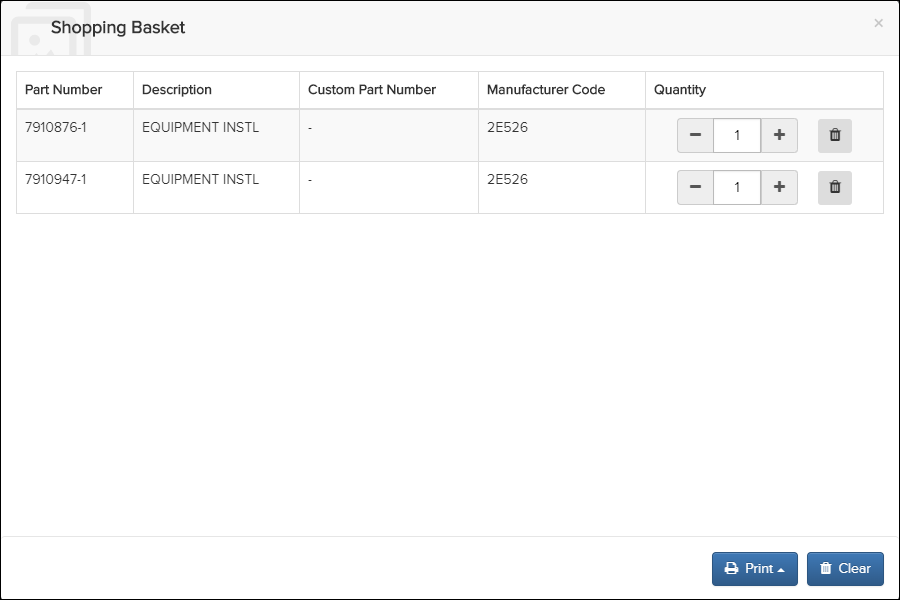
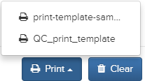

The shopping basket feature allows you to add parts to an order, view parts, change quantities, and print the parts order list.
Note: This feature is enabled by default. Administrators, refer to the topic Enable/Disable
the Shopping Basket for Parts Feature in the Flatirons Pinpoint Configuration
Guide for more information if you want to disable it. If the feature is not enabled,
the Shopping Basket icon does not display in the Action
Bar.
To add parts to the shopping basket, do these steps:
- From the Library pane, select a folder.
Publications that belong to the selected folder appear under the folder name.
- Select a publication.
The publication displays in the Content pane.

- Select the Shopping Basket icon below the part you want to add.The part is added to the Shopping Basket. The number of parts shows on the icon in the Action Bar, for example,
 . Note: Parts added to the shopping basket are stored in the browser's LocalStorage and not in any persistent data store.
. Note: Parts added to the shopping basket are stored in the browser's LocalStorage and not in any persistent data store. - Select the icon to view the added parts.

You can increase or decrease the quantity of parts or remove parts.Note: Your administrator can customize the display of the Shopping Basket columns. Administrators, refer to the Enable/Disable the Shopping Basket for Parts Feature topic in the Flatirons Pinpoint Configuration Guide for more information. - Select the Print button to print the parts order. The available
print templates appear, for example:

Note: Your administrator can create additional print templates. Administrators, refer to Configuring Print Templates for Shopping Basket for Parts in the Flatirons Pinpoint Configuration Guide for more information. - Select a print template.
A PDF output for the parts order is downloaded.